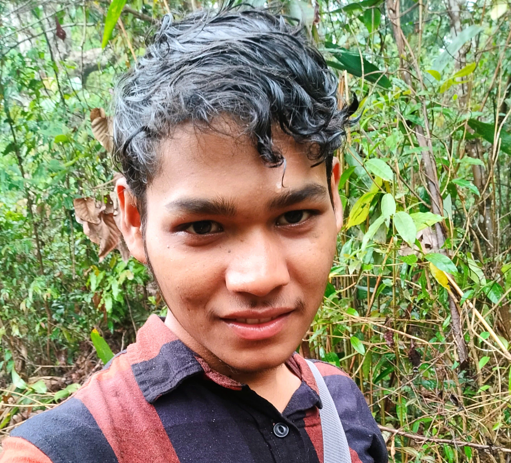

Tapan Sethi

Summary
I am a hardworking and dedicated individual with a strong passion for software engineering.
Education
Bachelor of Technology in Computer Science and Engineering - IIT Guwahati (2020-2024)
Work Experience
Research Engineer - Centre for Development of Telematics (C-DoT)
August 2024 - Present
- Designed and developed a historical data tracking feature for Indian Railways real-time wagon monitoring.
- Decoupled a Wildfly-managed database initialization module to standalone separate microservice in kubernetes.
- Designed a developed a fastapi based python service which receives and calculates KPIs from high frequencyIoT device data.
Skills
- Languages: Java, C/C++, Python
- Frameworks: JakartaEE, FastAPI, Flask, Junit
- Database: PostgreSQL
- Version Control & Tools: GitLab, Docker, kubernetes, Postman, Eclipse
- DevOps: GitLab, Docker, kubernetes
Achievements
- Selected for Indian National Mathematics Olympiad (INMO) one of only 2 out of 900 participants.
- Selected as Edison Engineering Development Programme (EEDP) Intern for GE Healthcare.
Others